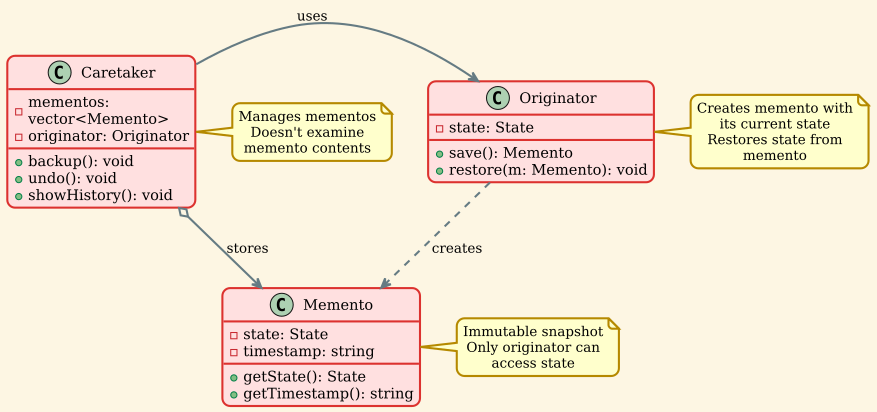
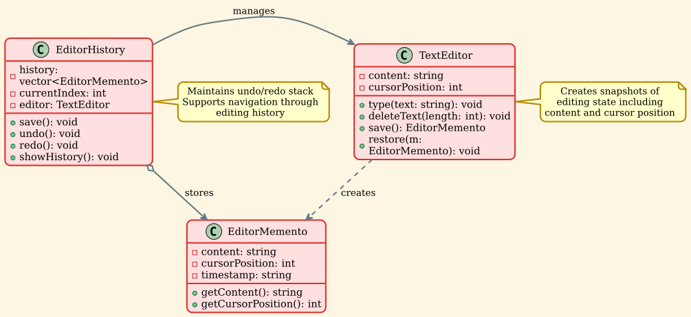
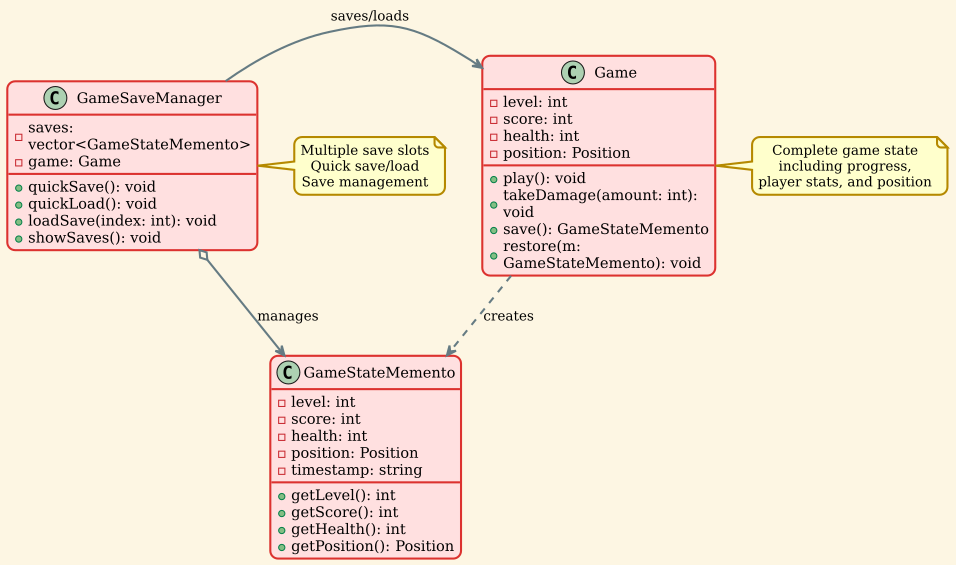

Memento Pattern¶
Overview¶
The Memento pattern is a behavioral design pattern that provides the ability to restore an object to its previous state without revealing the details of its implementation. It's also known as the Snapshot pattern, as it captures and externalizes an object's internal state so that the object can be restored to this state later.
Intent¶
- Capture and externalize an object's internal state without violating encapsulation
- Allow the object to be restored to this state later
- Provide undo/redo functionality
- Create snapshots of object state
Problem¶
Imagine you're building a text editor application. Users expect to be able to undo their actions - delete some text, move it back. But how do you implement this without exposing the editor's internal state?
Direct approach problems: - Violates encapsulation: Making state public breaks object boundaries - Tight coupling: Undo mechanism tied to specific object structure - Fragile: Changes to object structure break undo functionality - Complex: Object must manage its own history
You need a way to save and restore object state while: - Preserving encapsulation - Keeping the originating object simple - Supporting multiple snapshots - Allowing flexible restoration
Solution¶
The Memento pattern delegates creating the state snapshot to the actual owner of that state, the originator object. Instead of other objects trying to copy the editor's state from the "outside," the editor class itself can make the snapshot since it has full access to its own state.
The pattern suggests storing the copy of the object's state in a special object called memento. The contents of the memento aren't accessible to any other object except the one that produced it. Other objects must communicate with mementos using a limited interface which may allow fetching the snapshot's metadata but not the original object's state.
Structure¶

Components¶
-
Originator: Creates a memento containing a snapshot of its current internal state and can restore its state from a memento.
-
Memento: Stores internal state of the Originator object. The memento may store as much or as little of the originator's internal state as necessary.
-
Caretaker: Responsible for the memento's safekeeping. Never operates on or examines the contents of a memento.
Implementation Details¶
Memento Class¶
Originator Class¶
Caretaker Class¶
Real-World Example 1: Text Editor with Undo/Redo¶

Implementation¶
Real-World Example 2: Game Save System¶

Implementation¶
Applicability¶
Use the Memento pattern when:
-
Undo/Redo Functionality: You need to implement undo or rollback operations.
-
Snapshot Capability: You want to produce snapshots of an object's state to be able to restore it later.
-
Encapsulation Protection: Direct access to the object's fields/getters/setters violates its encapsulation.
-
State History: You need to maintain a history of an object's states.
-
Checkpoints: You want to create checkpoints in a process that can be returned to.
Advantages¶
-
Preserves Encapsulation: Doesn't violate encapsulation boundaries of the originator.
-
Simplified Originator: The originator doesn't need to manage different versions of its state.
-
Undo Support: Easy implementation of undo/redo functionality.
-
State History: Can maintain complete history of state changes.
-
Rollback Capability: Easy to rollback to any previous state.
-
Flexible Snapshots: Can capture partial or complete state as needed.
Disadvantages¶
-
Memory Overhead: Storing multiple mementos can consume significant memory if the originator's state is large.
-
Performance Cost: Creating and restoring mementos takes time, especially for large states.
-
Lifecycle Management: The caretaker must know when to delete old mementos to prevent memory issues.
-
Copying Cost: Full state copies can be expensive for complex objects.
-
Language Limitations: Some languages don't provide adequate support for encapsulation (access modifiers).
Relations with Other Patterns¶
- Command: Commands can use Memento to maintain state for undo operations. Command stores the memento before executing and can restore it during undo.
- Iterator: Can use Memento to capture and restore iteration state.
- Prototype: Memento is simpler than Prototype when you only need to restore state and not create new objects. Prototype creates a copy of the entire object, while Memento captures specific state.
- Serialization: Memento can be combined with serialization for persistent storage of states.
Design Variations¶
1. Incremental Memento¶
For large states, store only changes instead of complete snapshots:
2. Serializable Memento¶
For persistent storage:
3. Memento with Metadata¶
Include additional information:
Best Practices¶
- Limit History Size: Implement a maximum history size to prevent memory issues.
- Use Smart Pointers: Automatic memory management for mementos.
-
Implement Copy-on-Write: For efficiency with large states.
-
Consider Compression: Compress mementos for large states.
-
Lazy Restoration: Restore state only when needed.
-
Immutable Mementos: Make mementos immutable after creation.
-
Timestamp Mementos: Add timestamps for debugging and display.
Performance Considerations¶
Memory Optimization¶
Lazy Copying¶
Real-World Applications¶
1. Text Editors¶
- Undo/redo functionality
- Document revision history
- Auto-save and crash recovery
2. Games¶
- Save/load game state
- Checkpoint systems
- Replay functionality
- Network synchronization (rollback)
3. Databases¶
- Transaction rollback
- Savepoints
- Point-in-time recovery
4. Graphics Editors¶
- Layer state management
- Non-destructive editing
- History palette
5. Configuration Management¶
- Settings backup
- Configuration versioning
- Rollback to previous settings
6. Version Control Systems¶
- Commit snapshots (Git)
- Branch management
- Revert operations
7. Workflow Engines¶
- Process state checkpoints
- Resume from failure
- Audit trail
Example: Database Transaction¶
Comparison: Memento vs Command¶
| Aspect | Memento | Command |
|---|---|---|
| Purpose | Save/restore state | Encapsulate operations |
| Undo Method | Restore snapshot | Execute inverse operation |
| Memory | Stores complete state | Stores operation parameters |
| Performance | Can be memory-intensive | More memory-efficient |
| Complexity | Simpler implementation | More complex logic |
| Use Case | Large state, simple undo | Small state, complex operations |
Conclusion¶
The Memento pattern is essential for implementing undo/redo functionality and state management. It:
- Preserves encapsulation while enabling state restoration
- Simplifies originator by delegating state management
- Enables time travel through object state history
- Supports checkpoints and rollback operations
Key considerations: - Memory usage for storing mementos - Performance cost of state copying - Lifecycle management of mementos - Balance between functionality and resource usage
When properly implemented, the Memento pattern provides a clean, encapsulated way to manage object state history, making it invaluable for applications requiring undo functionality, checkpoints, or state rollback capabilities.